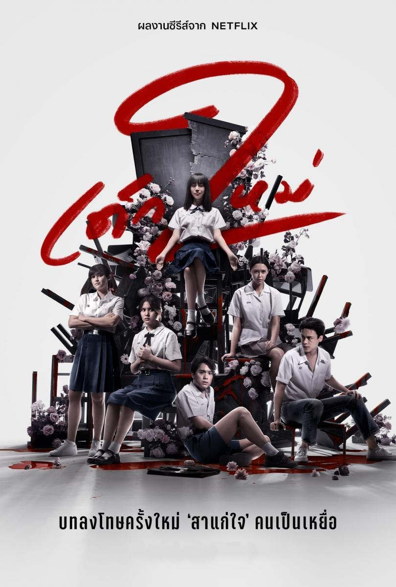

THE GIRL NOWHERE
Temporadas

Segunda Temporada (2021)
- Capítulo 1: “Embarazado”
Nanai es un chico popular en la escuela que tiene el mal hábito de embarazar a las chicas, por lo cual Nanno decide pagarle con la misma moneda.
- Capítulo 2: “True Love”
Cuando una elitista escuela de señoritas empieza a admitir varones, Nanno se resiste a las normas que reprimen la interacción entre chicas y chicos.
- Capítulo 3: “Minnie y los cuatro muertos”
Gracias a su adinerado y bien relacionado padre, Minnie nunca tiene que afrontar las consecuencias..., hasta que su imprudencia ocasiona la muerte de unas compañeras.
- Capítulo 4: “Yuri”
Nanno intenta ayudar a una alumna pobre a desquitarse de los compañeros de clase ricos que la menosprecian, pero puede que Nanno haya encontrado la horma de su zapato.
- Capítulo 5: “Antigüedad, orden, tradición, unidad y espíritu (SOTUS)”
Kaye, alumno del último año, se sobrepasa haciéndole novatadas a un grupo de alumnos menores. Le llega a Nanno la oportunidad de bajarle los humos.
- Cspítulo 6: “Liberación”
En Pantanawittaya, los alumnos deben obedecer estrictamente las normas sin chistar, pero Nanno disfruta de romper tantas como pueda.
- Capítulo 7: “JennyX”
Los padres de la famosa influencer JennyX la obligan a mantener su imagen para asegurar el flujo de ganancias, pero todo cambia cuando ella conoce a Nanno.
- Capítulo 8: “El juicio”
La rivalidad de Nanno y Yuri alcanza un punto crítico a causa del destino de una madre y su hija que, quizá, sean responsables de muchas desapariciones y muertes.